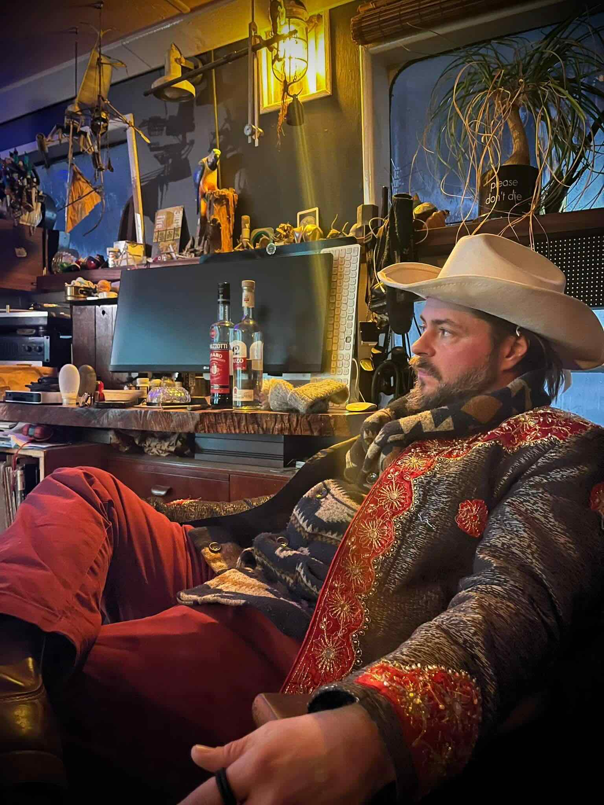

In Loving Memory

Google Drive (Collective Photos and Memories)
Flickr Album by Monica Canilao
Laughing Squid Articles (Ocean of Blood Project)
Orien's Personal Art Website
Vimeo Video (Berlin Project)
Google Drive (Orien's Artwork and Ephemera)